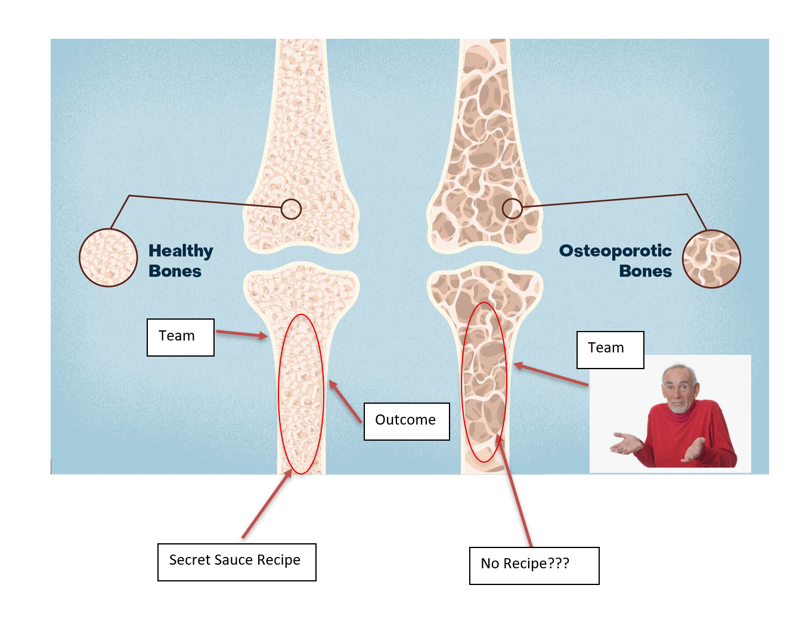

The secret sauce lives between your team and the outcome.
A company is a body, and its knowledge is the bones. The team sits at one end, the outcome at the other, and everything that turns one into the other is your secret sauce. Write it down and the bones stay strong.

Those who know me know that I like to think in pictures and parables, and I explain things using metaphors. This is one of the ones that I bring up a lot.
When I think of a company, I like to compare it to a human body, and it's not that far out because companies are also called organizations, and you've got organs inside your body. I think that's literally why: it needs to be organized. When you organize something, it's different parts in different areas that do different things but need to coordinate sensibly together, right? Your body does it, and so should your company. Maybe that is a little bit far out, but stay with me.
Now, I think that the actual knowledge management in a company can be seen as the bones of the company, like the structure holding everything together.
At the bottom you have your team, the people. At the top you have the outcome, the thing that team needs to produce. And in between sits everything that turns one into the other, which is the actual secret sauce of your business.

That middle is where the value lives, because it is how this particular team gets to this particular outcome, in a way no competitor quite replicates.
And when you leave that middle part inside somebody's head instead of writing it down, things get kind of awkward and messy.
When somebody leaves, you naturally would replace them, and because you hire well, you get a smart person to plug in. They figure out their own way to get to the outcome, and the outcome will still look the same, which is great.
Then three more people leave over the next two years, and three more plug in, each in their own slightly different way, and people rarely leave cleanly. They leave traces, half-finished habits, undocumented workarounds, and the new people build on top of those traces without knowing what they are or how they got there. This could look like a mysterious column in an Excel spreadsheet, and nobody knows why it's there, but we're all terrified to delete it.
And the outcome keeps looking the same. For years, it looks the same.
Then one day it does not.
You lift the hood to find out why, and what you find is decay that set in so gradually no one noticed, spread through so many small undocumented decisions that it is hard to fix because the bones looked fine from the outside the whole time.
That is company osteoporosis. The structure hollows out from the inside while the surface looks fine, and by the time it shows, the repair is enormous.
Usually, when I explain this story to people, this is when I start gesticulating wildly because it's literally preventable. There is absolutely no reason it has to happen this way. Everybody says that it's inevitable, but it's not. This is what I'm staking my entire career on.
You can prevent all of it, and the prevention is not fancy. You document the middle. You capture how the work actually moves from the team to the outcome, so that when someone leaves, the knowledge stays in the building and the next person plugs into it rather than into someone's fading trace.
This is what a quality management system is. That's the name that we've given it. A quality management system should also run through the entire company, just like you've got bones in your entire body. That's if you are a good, healthy human being, I suppose. If you had a body and some of it didn't have bones inside it, I think that would be really unfavorable. I think you would prefer to have bones everywhere, right? If you think about it like that, it doesn't really make sense why we associate the quality management system, or QMS, with the quality department, which is kind of stuck on the side of the organization like some benign tumor.